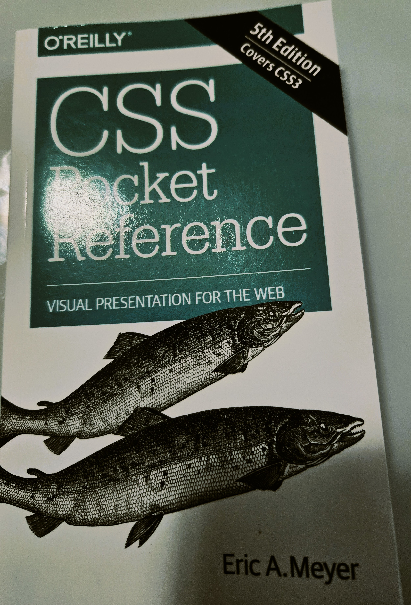
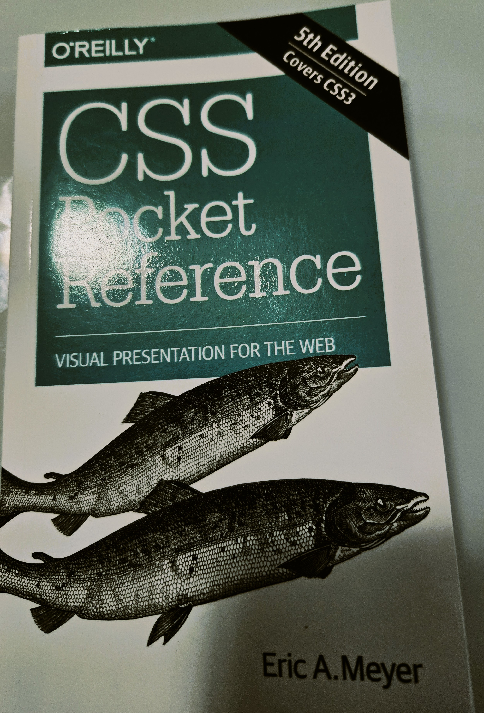

Getting Started (Orientation)
Please follow this orientation step by step to install and customize the tools we will need for this
course.Taking the time to set up everything properly will ensure that your learning experience runs
smoothly throughout the term.
In this section, you'll find detailed instructions, recommended software, and useful resources that will
help you get started.
Make sure to carefully review each step before moving on to the next one.
If you encounter any difficulties, don't hesitate to reach out to your instructor or check the provided
troubleshooting guide.
Completing this setup will allow you to practice and apply what you learn effectively, using the same
professional tools that are commonly used in the IT and web development industry.
By the end of this orientation, your environment will be fully configured and ready for hands-on
projects and assignments.
Install your IDE (Visual Studio Code)
For those using Windows 11, to run Visual Studio Code on your workstation, follow these steps to install
and set it up:
- Download the installer: Visit the official Visual Studio Code website and click on the "Download for Windows" button.
- Run the Installer: Locate the downloaded installer file (usually in your Downloads folder) and double-click it to start the installation process.
- Accept the License Agreement: Read through the license agreement, check the box to accept the terms, and click "Next".
- Choose Install Location: Select your desired location for the VSCode files or leave it at the default setting, then click "Next".
- Select Additional Tasks: Choose any additional tasks you'd like to perform, such as creating a desktop icon or adding VSCode to your PATH (recommended), then click "Next".
- Install:Click the "Install" button to begin the installation. This might take a few minutes.
- Launch VSCode:Once the installation is complete, check the "Launch Visual Studio Code" box and click "Finish" to start using VSCode immediately.
Install the Extensions (HTMLHint and Live Server)
To ensure a smooth and efficient experience with Visual Studio Code (VS Code), you'll need to install a
few essential extensions.
These extensions will enhance your coding environment, make your workflow easier, and provide useful
tools such as
syntax highlighting, debugging support, and code formatting.
In addition, some of these extensions will allow you to view your webpage live in a browser as you are
typing,
giving you immediate feedback and making it easier to see how your changes affect the design and
functionality.
Throughout this setup guide, you'll learn which extensions are required for the course and how to
install and configure them properly.
Taking a few minutes to complete this step will greatly improve your productivity and help you get the
most out of your development experience.
- Intall HTMLHint To install the HTMLHint extension in Visual Studio Code, follow these steps:
- Open Visual Studio Code and go to the Extensions view.
- Search for "HTMLHint" in the Extensions Marketplace.
- Click on the Install button next to the HTMLHint extension.
- Once installed, you can access the HTMLHint extension by clicking on the Extensions view icon in the Activity Bar or by using the View: Extensions command (⇧⌘X).
- Install Live Server The Live Server extension in Visual Studio Code is a powerful tool for web developers. It creates a local development server with live reload functionality, allowing you to see changes in your HTML, CSS, or JavaScript files instantly in the browser without manual refreshing.
- Open Visual Studio Code
- Go to the Extensions Panel by clicking the Extensions icon on the sidebar or pressing Ctrl+Shift+X (Windows/Linux) or Cmd+Shift+X (Mac).
- Search for "Live Server" by Ritwick Dey and click Install.
- Please watch thisvideo to see how to use live server.
Create a GitHub Account
There is no chapter in the textbook on version control! Read the following articles instead:
- What is Version Control
- What is Git and GitHub?
- Create your GitHub account
- Git Tutorial Part 1: What is Version Control
Install GitHub Desktop
Please watch this video to see how to install Github desktopAssignments
Explain the Assignments...
- Create your Own Website assignments
- Book Work assignments
Final Project
You can find the requirements for the final project here.
- Web accessibility
- Responsive web design
- Cross-browser compatible
- Search engine optimization
How to push to GitHub
- git add .
- git commit -m "meassage"
- git push